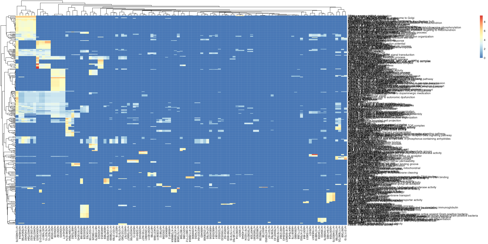
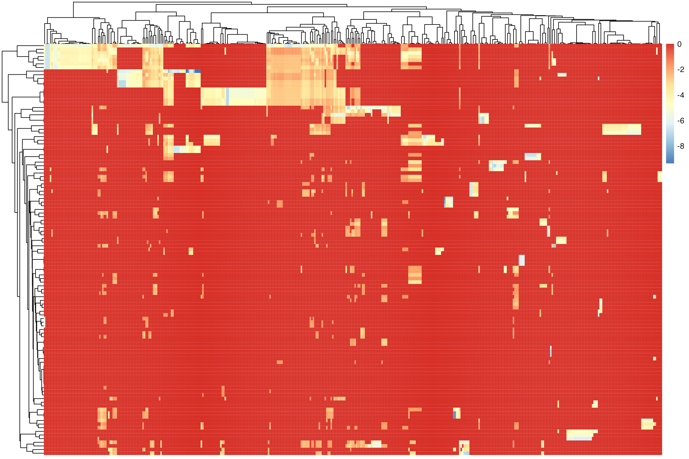
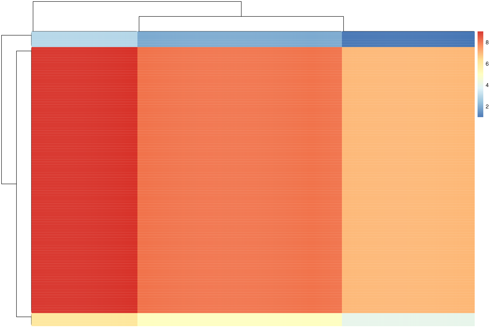
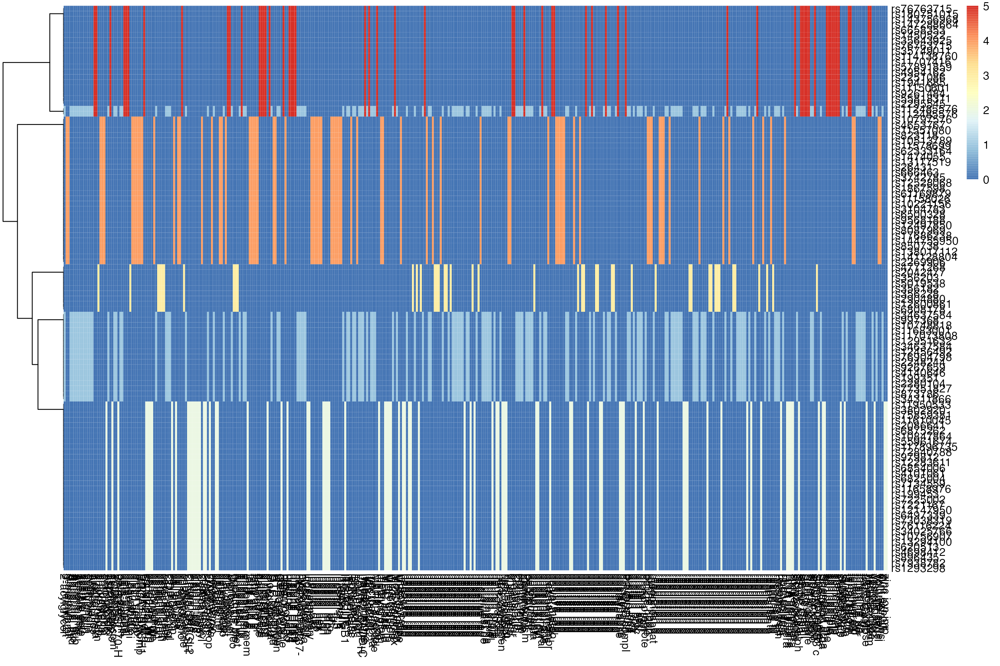

subtyper: subtyping with functional enrichment via SNPs
Source:vignettes/nalls_pd_genetics.Rmd
nalls_pd_genetics.RmdFunctional enrichment
Single nucleotide polymorphisms (SNPs) are the most common type of genetic variation among people and represent a difference, within or between genes, in a sigle base pair. SNPs are a “digital code” for genetic patterns. Consequently, they are a very fine-grained, noisy measurement of genetic variability.
Functional enrichment analysis uses meta-analysis to associate high-level properties such as disease risk, high expression within given cell types or other phenotypes with genes or SNPs. This vignette uses an open dataset Nalls 2019 and gene ontology query tool (ggprofiler) to identify clusters of SNPs associated with pleiotropic properties. See this review for conceptual background on functional genomics.
First, we generate the association data.
#> No results to show
#> Please make sure that the organism is correct or set significant = FALSE
#> No results to show
#> Please make sure that the organism is correct or set significant = FALSE
#> No results to show
#> Please make sure that the organism is correct or set significant = FALSE
#> No results to show
#> Please make sure that the organism is correct or set significant = FALSE
#> No results to show
#> Please make sure that the organism is correct or set significant = FALSE
#> No results to show
#> Please make sure that the organism is correct or set significant = FALSE
#> No results to show
#> Please make sure that the organism is correct or set significant = FALSE
#> No results to show
#> Please make sure that the organism is correct or set significant = FALSE
#> No results to show
#> Please make sure that the organism is correct or set significant = FALSE
#> No results to show
#> Please make sure that the organism is correct or set significant = FALSE
#> No results to show
#> Please make sure that the organism is correct or set significant = FALSE
#> No results to show
#> Please make sure that the organism is correct or set significant = FALSE
#> No results to show
#> Please make sure that the organism is correct or set significant = FALSE
#> No results to show
#> Please make sure that the organism is correct or set significant = FALSE
Next, we explicitly perform clustering. First, cluster based on SNPs.
Second, cluster based on function.
bi-clustering via joint clustering and via NMF
tabulate the pairs of clusters that exist
provide evidence that joint clusters are valid (TODO)
| jointClusterMatrix | Freq |
|---|---|
| 1-1 | 594 |
| 1-2 | 979 |
| 1-3 | 770 |
| 2-1 | 1026 |
| 2-2 | 1691 |
| 2-3 | 1330 |
| 3-1 | 4482 |
| 3-2 | 7387 |
| 3-3 | 5810 |


#> [1] "NMF: 1"
#> [1] "rs12283611" "rs979812" "rs356228" "rs356182" "rs5019538"
#> [6] "rs356203" "rs2042477" "rs4771268" "rs26431" "rs11707416"
#> [11] "rs114138760" "rs35749011" "rs76763715" "rs35643925" "rs1450522"
#> [16] "rs6658353" "rs10797576" "rs147288664" "rs143756968" "rs180751015"
#> [21] "rs76763715" "rs112485576" "rs34637584"
#> [1] "Abnormal speech prosody"
#> [2] "Abnormal substantia nigra morphology"
#> [3] "Abnormality of binocular vision"
#> [4] "Abnormality of midbrain morphology"
#> [5] "Akinesia"
#> [6] "alcohol biosynthetic process"
#> [7] "autophagosome organization"
#> [8] "autophagy"
#> [9] "axon"
#> [10] "axon terminus"
#> [11] "beta-glucosidase activity"
#> [12] "beta-glucoside catabolic process"
#> [13] "beta-glucoside metabolic process"
#> [14] "Bradykinesia"
#> [15] "C-palmitoyltransferase activity"
#> [16] "cellular lipid metabolic process"
#> [17] "Cerebral inclusion bodies"
#> [18] "Chronic constipation"
#> [19] "determination of adult lifespan"
#> [20] "Diplopia"
#> [21] "DJ-1-SNCA complex, high molecular weight complex"
#> [22] "Gliosis"
#> [23] "glucosylceramidase activity"
#> [24] "glucosylceramide catabolic process"
#> [25] "Hypomimic face"
#> [26] "Hyposmia"
#> [27] "inositol trisphosphate kinase activity"
#> [28] "inositol-1,4,5-trisphosphate 3-kinase activity"
#> [29] "Lewy bodies"
#> [30] "lipid biosynthetic process"
#> [31] "Low frustration tolerance"
#> [32] "lysosome"
#> [33] "lysosome organization"
#> [34] "lytic vacuole"
#> [35] "lytic vacuole organization"
#> [36] "macroautophagy"
#> [37] "MAPK cascade"
#> [38] "mitochondrion organization"
#> [39] "Monotonic speech"
#> [40] "multicellular organism aging"
#> [41] "negative regulation of neuron death"
#> [42] "negative regulation of protein phosphorylation"
#> [43] "negative regulation of protein-containing complex assembly"
#> [44] "negative regulation of signal transduction"
#> [45] "neuron death"
#> [46] "neuron projection terminus"
#> [47] "Orthostatic hypotension"
#> [48] "Orthostatic hypotension due to autonomic dysfunction"
#> [49] "Parkinsonism with favorable response to dopaminergic medication"
#> [50] "phosphomevalonate kinase activity"
#> [51] "positive regulation of catabolic process"
#> [52] "positive regulation of neuronal action potential"
#> [53] "positive regulation of protein lipidation"
#> [54] "potassium channel complex"
#> [55] "process utilizing autophagic mechanism"
#> [56] "regulation of autophagy"
#> [57] "regulation of ion transmembrane transport"
#> [58] "regulation of macroautophagy"
#> [59] "regulation of neuron death"
#> [60] "regulation of peroxidase activity"
#> [61] "regulation of water loss via skin"
#> [62] "Resting tremor"
#> [63] "RSC-type complex"
#> [64] "scavenger receptor binding"
#> [65] "Schizophrenia"
#> [66] "serine C-palmitoyltransferase activity"
#> [67] "Serine-palmitoyltransferase (SPTLC1, SPTLC2, ssSPTb) complex"
#> [68] "Serine-palmitoyltransferase (SPTLC1, SPTLC3, ssSPTb) complex"
#> [69] "Shuffling gait"
#> [70] "SNCA-TUBB3 complex"
#> [71] "Spastic/hyperactive bladder"
#> [72] "sphingolipid biosynthetic process"
#> [73] "steryl-beta-glucosidase activity"
#> [74] "Substantia nigra gliosis"
#> [75] "tarsal gland development"
#> [76] "termination of signal transduction"
#> [77] "trans-Golgi network"
#> [78] "uterine gland development"
#> [79] "vacuolar lumen"
#> [80] "vacuole"
#> [81] "vacuole organization"
#> [82] "Visual hallucinations"
#> [83] "voltage-gated potassium channel complex"
#> [84] "volume-sensitive chloride channel activity"
#> [1] "NMF: 2"
#> [1] "rs6476434" "rs12147950" "rs2248244" "rs76904798" "rs12456492"
#> [6] "rs34637584" "rs12951632" "rs117073808" "rs141128804" "rs180751015"
#> [11] "rs76763715" "rs112485576" "rs34637584"
#> [1] "amphisome"
#> [2] "autophagosome organization"
#> [3] "autophagy"
#> [4] "axon"
#> [5] "axon terminus"
#> [6] "beta-catenin destruction complex binding"
#> [7] "caveola neck"
#> [8] "cytoplasmic side of mitochondrial outer membrane"
#> [9] "dendrite"
#> [10] "dendritic tree"
#> [11] "determination of adult lifespan"
#> [12] "Gliosis"
#> [13] "GTP-dependent protein kinase activity"
#> [14] "HSP90-CDC37-LRRK2 complex"
#> [15] "LRRK2-CHIP-HSP90 complex"
#> [16] "LRRK2-FADD-CASP8 complex"
#> [17] "lysosome organization"
#> [18] "lytic vacuole organization"
#> [19] "macroautophagy"
#> [20] "MAPK cascade"
#> [21] "mitochondrion organization"
#> [22] "multicellular organism aging"
#> [23] "multivesicular body, internal vesicle"
#> [24] "negative regulation of establishment of protein localization to mitochondrion"
#> [25] "negative regulation of late endosome to lysosome transport"
#> [26] "negative regulation of neuron death"
#> [27] "negative regulation of peroxidase activity"
#> [28] "negative regulation of protein phosphorylation"
#> [29] "negative regulation of protein processing involved in protein targeting to mitochondrion"
#> [30] "negative regulation of protein targeting to mitochondrion"
#> [31] "negative regulation of signal transduction"
#> [32] "negative regulation of thioredoxin peroxidase activity by peptidyl-threonine phosphorylation"
#> [33] "negative regulation of vacuolar transport"
#> [34] "neuron death"
#> [35] "neuron projection terminus"
#> [36] "peroxidase inhibitor activity"
#> [37] "positive regulation of catabolic process"
#> [38] "positive regulation of protein autoubiquitination"
#> [39] "positive regulation of protein deacetylation"
#> [40] "process utilizing autophagic mechanism"
#> [41] "protein localization to endoplasmic reticulum exit site"
#> [42] "protein serine/threonine/tyrosine kinase activity"
#> [43] "regulation of autophagy"
#> [44] "regulation of CAMKK-AMPK signaling cascade"
#> [45] "regulation of cellular response to stress"
#> [46] "regulation of deacetylase activity"
#> [47] "regulation of histone deacetylase activity"
#> [48] "regulation of kidney size"
#> [49] "regulation of late endosome to lysosome transport"
#> [50] "regulation of macroautophagy"
#> [51] "regulation of neuron death"
#> [52] "regulation of peroxidase activity"
#> [53] "regulation of protein processing involved in protein targeting to mitochondrion"
#> [54] "regulation of retrograde transport, endosome to Golgi"
#> [55] "regulation of vacuolar transport"
#> [56] "somatodendritic compartment"
#> [57] "trans-Golgi network"
#> [58] "vacuole organization"
#> [59] "Wnt signalosome assembly"
#> [1] "NMF: 3"
#> [1] "rs896435" "rs181609621" "rs117615688" "rs6854006" "rs12283611"
#> [6] "rs979812" "rs356228" "rs356182" "rs5019538" "rs356203"
#> [11] "rs2042477" "rs4771268" "rs26431" "rs11683001" "rs10748818"
#> [16] "rs997368" "rs13117519" "rs72840788" "rs117896735" "rs55961674"
#> [21] "rs10847864" "rs6875262" "rs2086641" "rs11610045" "rs75859381"
#> [26] "rs3802920" "rs11950533" "rs4954162" "rs57891859"
#> [1] "ARF protein signal transduction"
#> [2] "asymmetric synapse"
#> [3] "autophagosome organization"
#> [4] "BAG3-HSC70-HSPB8-CHIP complex"
#> [5] "CAMK2-delta-MASH1 promoter-coactivator complex"
#> [6] "cell projection"
#> [7] "cellular localization"
#> [8] "clathrin-coated pit"
#> [9] "clathrin-coated vesicle"
#> [10] "CTCF-nucleophosmin-PARP-HIS-KPNA-LMNA-TOP complex"
#> [11] "dendrite"
#> [12] "dendritic tree"
#> [13] "establishment of localization in cell"
#> [14] "Hip1R-cortactin complex"
#> [15] "inositol monophosphate 1-phosphatase activity"
#> [16] "inositol monophosphate 3-phosphatase activity"
#> [17] "inositol monophosphate 4-phosphatase activity"
#> [18] "inositol monophosphate phosphatase activity"
#> [19] "MHC class Ib protein binding"
#> [20] "MHC class Ib protein binding, via antigen binding groove"
#> [21] "MHC class Ib protein complex binding"
#> [22] "mitochondrion organization"
#> [23] "movement of cell or subcellular component"
#> [24] "negative regulation of cytoskeleton organization"
#> [25] "negative regulation of establishment of protein localization to mitochondrion"
#> [26] "negative regulation of neuron projection regeneration"
#> [27] "negative regulation of protein phosphorylation"
#> [28] "negative regulation of protein polymerization"
#> [29] "negative regulation of protein targeting to mitochondrion"
#> [30] "negative regulation of protein-containing complex assembly"
#> [31] "negative regulation of supramolecular fiber organization"
#> [32] "neuron projection"
#> [33] "neuron to neuron synapse"
#> [34] "phosphatidylinositol-3,4,5-trisphosphate binding"
#> [35] "phosphatidylinositol-3,5-bisphosphate binding"
#> [36] "phosphatidylinositol-4-phosphate phosphatase activity"
#> [37] "plasma membrane bounded cell projection"
#> [38] "positive regulation of clathrin coat assembly"
#> [39] "positive regulation of memory T cell activation"
#> [40] "positive regulation of platelet-derived growth factor receptor-beta signaling pathway"
#> [41] "postsynapse"
#> [42] "postsynaptic density"
#> [43] "postsynaptic specialization"
#> [44] "postsynaptic specialization of symmetric synapse"
#> [45] "protein localization to endoplasmic reticulum exit site"
#> [46] "regeneration"
#> [47] "regulation of ARF protein signal transduction"
#> [48] "regulation of autophagy"
#> [49] "regulation of cellular localization"
#> [50] "regulation of cellular response to stress"
#> [51] "regulation of clathrin coat assembly"
#> [52] "regulation of deacetylase activity"
#> [53] "regulation of histone deacetylase activity"
#> [54] "regulation of ion transmembrane transport"
#> [55] "regulation of localization"
#> [56] "regulation of macroautophagy"
#> [57] "regulation of memory T cell activation"
#> [58] "regulation of neuron projection regeneration"
#> [59] "regulation of protein polymerization"
#> [60] "SERCA2a-alphaKAP-CaM-CaMKII complex"
#> [61] "somatodendritic compartment"
#> [62] "synapse"
#> [63] "vacuole organization"
#> [1] "NMF: 4"
#> [1] "rs873786" "rs34311866" "rs55818311" "rs2295545" "rs77351827"
#> [6] "rs12600861" "rs7938782" "rs1293298" "rs896435" "rs4698412"
#> [11] "rs620513" "rs13294100" "rs10756907" "rs34025766" "rs76116224"
#> [16] "rs73038319" "rs6497339" "rs2280104" "rs199351" "rs4140646"
#> [21] "rs6808178" "rs2904880" "rs9261484" "rs11150601" "rs1941685"
#> [26] "rs9267659" "rs112485576" "rs181609621" "rs12147950" "rs2248244"
#> [31] "rs76904798" "rs12456492" "rs34637584" "rs12951632" "rs117073808"
#> [36] "rs141128804" "rs2269906" "rs138017112" "rs850738" "rs144755950"
#> [41] "rs17686238" "rs62053943" "rs9912362" "rs6854006" "rs12283611"
#> [46] "rs979812" "rs356228" "rs356182" "rs5019538" "rs356203"
#> [51] "rs4954162" "rs57891859" "rs10797576" "rs180751015" "rs76763715"
#> [56] "rs112485576"
#> [1] "ADP-ribosyl cyclase activity"
#> [2] "cardiolipin synthase activity"
#> [3] "CD19-VAV1-PIK3R1 complex"
#> [4] "CDP-diacylglycerol-glycerol-3-phosphate 3-phosphatidyltransferase activity"
#> [5] "CDP-diacylglycerol-phosphatidylglycerol phosphatidyltransferase activity"
#> [6] "CIN85-CBL-SH3GL2 complex"
#> [7] "CIN85-SH3GL2 complex"
#> [8] "clathrin-coated pit"
#> [9] "clathrin-coated vesicle"
#> [10] "CR2-CD19 complex"
#> [11] "cyclic ADP-ribose hydrolase"
#> [12] "dendrite extension"
#> [13] "developmental growth involved in morphogenesis"
#> [14] "HCF-1 complex"
#> [15] "ITGA8-ITGB1 complex"
#> [16] "lipid biosynthetic process"
#> [17] "lysosome"
#> [18] "lysosome organization"
#> [19] "lytic vacuole"
#> [20] "lytic vacuole organization"
#> [21] "MOF complex"
#> [22] "neuron to neuron synapse"
#> [23] "phosphatidyltransferase activity"
#> [24] "phosphotransferase activity, for other substituted phosphate groups"
#> [25] "plasma membrane tubulation"
#> [26] "postsynaptic specialization"
#> [27] "potassium channel complex"
#> [28] "RNA polymerase I cis-regulatory region sequence-specific DNA binding"
#> [29] "RNA polymerase I general transcription initiation factor activity"
#> [30] "Set1A complex"
#> [31] "synapse"
#> [32] "thiamine pyrophosphate transmembrane transporter activity"
#> [33] "UDP-D-xylose:beta-D-glucoside alpha-1,3-D-xylosyltransferase activity"
#> [34] "vacuolar lumen"
#> [35] "vacuole"
#> [36] "voltage-gated potassium channel complex"
#> [1] "NMF: 5"
#> [1] "rs34311866" "rs12147950" "rs2248244" "rs76904798" "rs12456492"
#> [6] "rs34637584" "rs9912362" "rs117615688" "rs7221167" "rs7225002"
#> [11] "rs199453" "rs11658976" "rs7134559" "rs8087969" "rs12497850"
#> [16] "rs9568188" "rs6500328" "rs3104783" "rs10221156" "rs11158026"
#> [21] "rs61169879" "rs1867598" "rs2251086" "rs76949143" "rs12528068"
#> [26] "rs3742785" "rs666463" "rs6825004" "rs4101061" "rs11683001"
#> [31] "rs10748818" "rs997368" "rs13117519" "rs1474055" "rs62333164"
#> [36] "rs11578699" "rs10513789" "rs823118" "rs11557080" "rs4653767"
#> [41] "rs10797576"
#> [1] "3-methylcrotonyl-CoA carboxylase"
#> [2] "adenyl nucleotide binding"
#> [3] "adenyl ribonucleotide binding"
#> [4] "alcohol biosynthetic process"
#> [5] "anion binding"
#> [6] "ATP binding"
#> [7] "biotin binding"
#> [8] "biotin carboxylase activity"
#> [9] "BRCA1-BACH1 complex"
#> [10] "C-palmitoyltransferase activity"
#> [11] "carbohydrate derivative binding"
#> [12] "CoA carboxylase activity"
#> [13] "cyclohydrolase activity"
#> [14] "developmental growth involved in morphogenesis"
#> [15] "flavonoid binding"
#> [16] "GTP cyclohydrolase activity"
#> [17] "GTP cyclohydrolase I activity"
#> [18] "inositol hexakisphosphate 5-kinase activity"
#> [19] "inositol hexakisphosphate kinase activity"
#> [20] "inositol trisphosphate kinase activity"
#> [21] "inositol-1,4,5-trisphosphate 3-kinase activity"
#> [22] "macroautophagy"
#> [23] "methylcrotonoyl-CoA carboxylase activity"
#> [24] "MSL complex"
#> [25] "muramyl dipeptide binding"
#> [26] "neuron projection terminus"
#> [27] "NSL complex"
#> [28] "nucleoside phosphate binding"
#> [29] "nucleotide binding"
#> [30] "positive regulation of catabolic process"
#> [31] "purine nucleotide binding"
#> [32] "purine ribonucleoside triphosphate binding"
#> [33] "purine ribonucleotide binding"
#> [34] "regulation of autophagy"
#> [35] "regulation of cellular response to stress"
#> [36] "regulation of macroautophagy"
#> [37] "regulation of retrograde transport, endosome to Golgi"
#> [38] "ribonucleotide binding"
#> [39] "RSC-type complex"
#> [40] "serine C-palmitoyltransferase activity"
#> [41] "Serine-palmitoyltransferase (SPTLC1, SPTLC2, ssSPTb) complex"
#> [42] "Serine-palmitoyltransferase (SPTLC1, SPTLC3, ssSPTb) complex"
#> [43] "small molecule binding"
#> [44] "sphingolipid biosynthetic process"
#> [45] "volume-sensitive chloride channel activity"